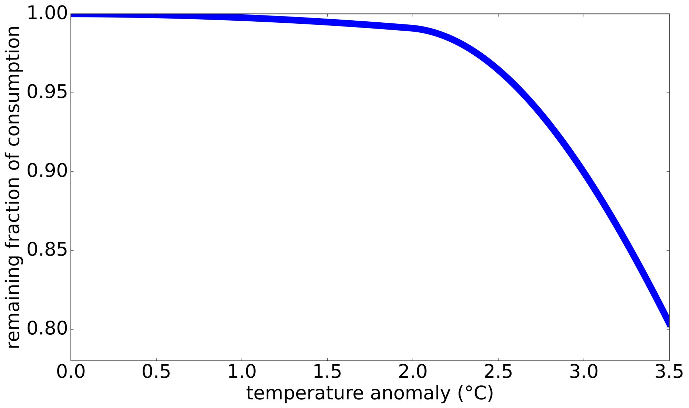
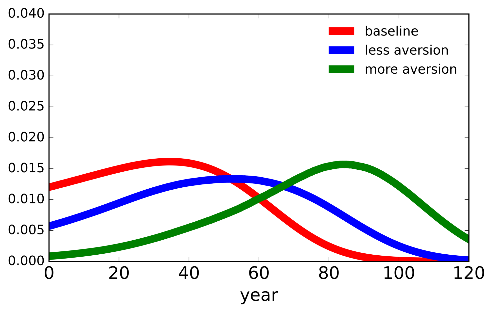
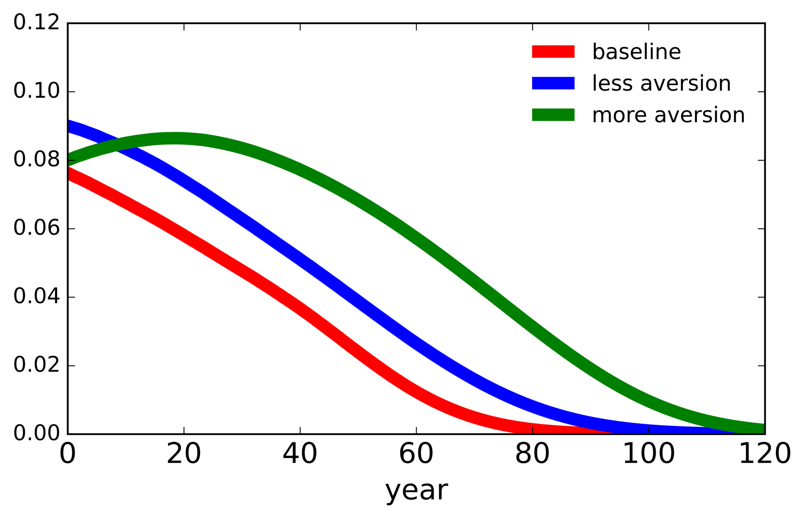
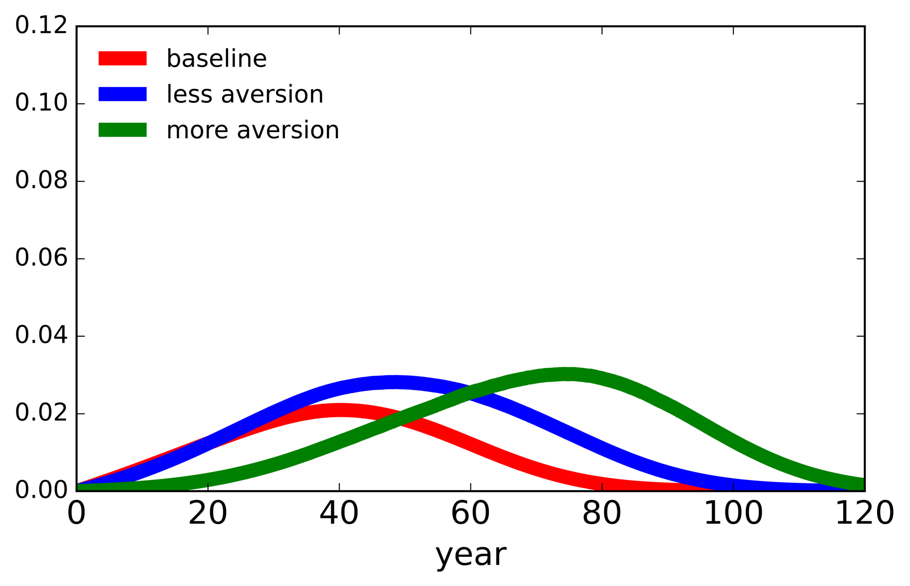
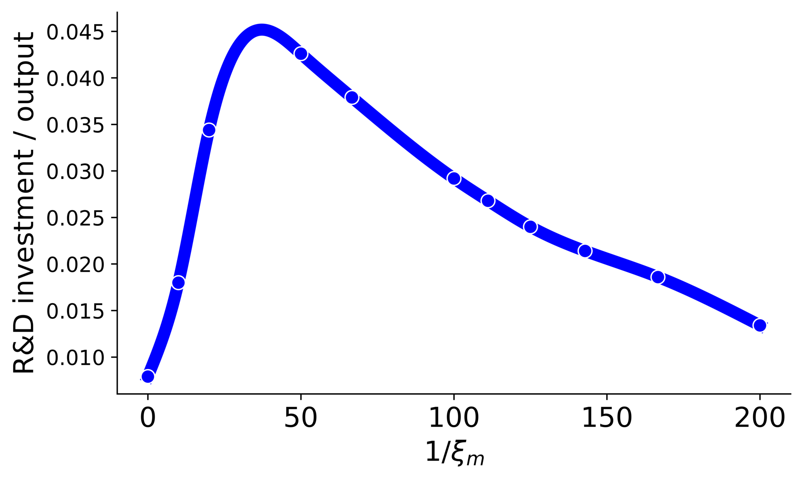

9. A simplified model with only technology jumps#
As a simplified illustration of why the social planner’s R&D investment response is so sensitive to uncertainty concerns, we consider a version of our model focused solely on the potential technology discovery. In this simplified setting, we assume that there is a single known damage curve, i.e. there is no damage information event. The constructed damage curve instead assumes that the additional curvature begins at a temperature anomaly of \(2^{\circ} C\) with a value of \(\lambda_3\) being the baseline average across the set of possible \(\lambda_3(\ell)\)’s. The resulting damage function is shown in Figure 8. We also close down uncertainty aversion related to the diffusion contribution and the alternative climate models to further enhance the focus on the prospective technology discovery. We consider two variations of our previous computations. First, we entertain considerably larger specifications of uncertainty aversion (smaller values of \(\xi_m\)). Second, we allow for the technology discovery to occur only partially or in two stages instead of one.

Figure 8: The consumption impact of the single damage function constructed by imposing \({\hat y} = 2\) and the arithmetic average of the \(\lambda_3(\ell)\)’s. Formally, the vertical axis measures \(\exp(-{\hat n})\). The damages range from no impact on consumption \((1.00)\) for a \(0.0^{\circ}C\) temperature anomaly to a nearly 20% reduction in consumption \((\sim .80)\) for a \(3.5^{\circ}C\) temperature anomaly.
9.1. Enhanced uncertainty aversion#
Figure 9 gives the baseline and two uncertainty-adjusted densities for the timing of the technology jump. This figure shows the delay in the prospective success under the uncertainty-adjusted probability measures. For example, the median in the baseline case is about 34.6 years. The enhanced medians for the less averse and more averse specifications are about 49.4 and 78.8 years, respectively. The uncertainty-adjusted densities make the R&D investment appear less attractive from a social valuation perspective.

Figure 9: Jump time densities for the technology jump only model, including the baseline specification and uncertainty-adjusted densities for two alternative specifications of uncertainty aversion.
Table 6 reports the three flow contributions to the SVRD for alternative aversions to uncertainty, along with the robustly optimal initial investments for R&D and capital. In this simplified model, we continue to see more R&D investment for greater uncertainty concerns. All three contributions to the SVRD increase with uncertainty concerns, including the flow ii term. In the absence of a damage information event, the flow ii term is now the major contributor to the SVRD, accounting for about two-thirds of overall valuations.
\(\xi_m\) |
flow i |
flow ii |
flow iii |
sum |
R&D investment |
capital investment |
|---|---|---|---|---|---|---|
\(\infty\) |
0.45 |
2.90 |
0.96 |
4.32 |
0.0079 |
0.771 |
0.1 |
0.99 |
4.10 |
1.54 |
6.64 |
0.0180 |
0.760 |
0.05 |
1.65 |
6.07 |
1.68 |
9.40 |
0.0344 |
0.742 |
Table 6: Flow decomposition of the SVRD and initial investments for the one-jump specification. R&D and capital investment are reported as ratios relative to output abstracting from the energy input (\(\alpha K\)). Outcomes are shown for the three different values of the aversion parameter \(\xi_m\) in the respective rows.
Marginal changes in both capital states contribute to the outcomes reported in Table 6 for SVRD. As we have seen, the marginal valuations can be decomposed by horizon, analogous to the measurements from impulse-response analyses. We display such horizon-based marginal valuation decompositions in Figure 10. The left panel reports flow ii decompositions, and the right panel displays flow iii decompositions.


Figure 10: Horizon decompositions of the flow contributions for the SVRDs. To convert the marginal value contributions in Panel (a) from \({\hat r}\) to \(r\) and put them in units of the damaged consumption numeraire, we scaled the Panel (a) trajectory by the initial period ratio of damaged consumption to the stock of knowledge. We did the analogous conversion for the Panel (b) trajectory. Each panel plots trajectories under the baseline (\(\xi_m = \infty\)) specification as well as two alternative specifications of uncertainty aversion.
From the left panel of Figure 10, we see that smaller values of \(\xi_m\) (greater uncertainty aversion) lead to greater horizon-specific contributions to the SVRDs except sometimes at very short horizons. As noted in Section 8.4, an increase in the difference \(V^L - V\) gives a counteracting force to the delays in the jump time densities reported in Figure 9.
The horizon decompositions in the right panel of Figure 10 provide a rather different accounting for flow iii. The marginal continuation-value contribution, \(\frac {\partial V^L}{\partial {\hat k}} = 1\), is independent of \(\xi_m\) due to the additive separability of \(V^L\). The distorted jump intensity, however, remains an important contributor to this term. The locations of the peaks in the responses reflect the uncertainty-adjusted jump probabilities, which give more pessimistic assessments to the timing of an R&D success when uncertainty aversion is enhanced.
Uncertainty in the success date makes the investment less attractive. This force is more than offset by the net payoff to discovery, which increases because an R&D success eliminates an important source of uncertainty. Although the second force dominates in our calculations, this finding turns out to be sensitive to the range of aversions that are considered. Figure 11 shows that for very high misspecification concerns (high values of \(1/\xi_m\)), the first force can dominate, leading instead to a reduction in the R&D investment. The SVRD follows a similar pattern, which is to be expected given the first-order conditions for R&D investment.

Figure 11: R&D investment as a function of the inverse of the robustness penalty parameter, \(1/\xi_m\), for the technology jump only model. In constructing this figure, we first computed R&D investment-to-output ratios for a discrete set of \(\xi_m\)’s, and then we formed the blue curve by taking a smoothed cubic spline fit to the discrete set of computed outcomes.
9.2. Two-step technology discovery#
Using this simplified model without a damage information event, we next explore the quantitative impact of altering our one-step technology advancement specification. We first entertain a two-step counterpart with three alternative jump intensity functions. In all cases, the first technology jump goes only part of the way to a successful green transition by setting \(\phi_0\) in the output constraint to half of its original value. Only after the second technology jump is the full green transition achieved by setting \(\phi_0\) to zero. Continuing to denote the one-jump model jump intensity as \({\mathcal J}^L\), we explore the following scenarios:
i) we use \(2{\mathcal J}^L\) as the intensity for each of the jumps;
ii) we use \({\mathcal J}^L\) as the intensity for each of the jumps;
iii) we use \(2{\mathcal J}^L\) as the intensity for each jump, but we reinitialize \(R_t\) for the second jump at \(R_0\).
In the third experiment, the initial advancement of the knowledge stock is assumed to be relevant only for the first technology jump, in contrast to the other two two-step specifications. We also include a fourth specification, which uses a one-step technology specification that allows for only a partial success:
iv) we use \({\mathcal J}^L\) as the intensity with a single jump of \(\phi_0\) to half of its original value;
Appendix K of the paper and Online Appendix O provide additional results and full details for the model HJB equations.
In Table 7, we report the SVRDs and R&D investments relative to total output for each of these alternative jump specifications using \(\xi_m\) equal to .05 and .1 as in our full model. We replicate the qualitative implications of our one-jump specifications, but quantitative magnitudes differ. We view two-jump specification i) as the closest counterpart to the one-jump versions of the model, and find that the baseline R&D investment/output ratios are very similar. While uncertainty aversion continues to lead to higher R&D investments than the baseline case, the increases are more modest than in the one-jump model.
In comparison to specification ii), the SVRDs and the implied investments are substantially reduced for specification iv). This outcome is to be anticipated because in the absence of a second jump, the rewards to R&D investment are greatly reduced. Nevertheless, the qualitative responses to increased uncertainty aversion remain for the aversions we report.
| \(\xi_m\) | (i) | (ii) | (iii) | (iv) | ||||
|---|---|---|---|---|---|---|---|---|
| SVRD | R&D inv. | SVRD | R&D inv. | SVRD | R&D inv. | SVRD | R&D inv. | |
| \(\infty\) | 4.39 | 0.0084 | 5.94 | 0.0153 | 4.11 | 0.0074 | 2.71 | 0.0032 |
| 0.1 | 5.40 | 0.0127 | 7.40 | 0.0238 | 6.17 | 0.0166 | 3.29 | 0.0047 |
| 0.05 | 6.62 | 0.0190 | 8.81 | 0.0337 | 8.63 | 0.0323 | 4.07 | 0.0072 |
Table 7: Social valuations and initial investments for the alternative technology specifications. R&D investment is reported as a ratio relative to output abstracting from the energy input (\(\alpha K\)). Outcomes are shown for the three different values of the aversion parameter \(\xi_m\) in the respective rows.
9.3. Uncertainty aversion sensitivity#
This section is Appendix F.3 of the paper.
To further detail the model sensitivity to uncertainty aversion, we provide the numerical values for the SVRD and R&D investment outcomes corresponding to Figure 11. The numerical values, provided in Table 21, show the responses to increasing uncertainty aversion (decreasing \(\xi_m\)) for the technology jump only model where the only uncertainty channel is the technology jump channel. The SVRD increases to more than double the baseline case at its maximum, and then diminishes to about 30% higher than the baseline case for the smallest value of \(\xi_m\) that we examine. The R&D investment value rises to nearly \(5.5\) times higher than the baseline case at its maximum, and then decreases to a value just under double the baseline case for the smallest value of \(\xi_m\) that we examine.
\(\xi_m\) |
\(\infty\) |
0.10 |
0.05 |
0.02 |
0.015 |
0.01 |
0.009 |
0.008 |
0.007 |
0.006 |
0.005 |
|---|---|---|---|---|---|---|---|---|---|---|---|
SVRD |
4.26 |
6.44 |
8.90 |
9.92 |
9.35 |
8.21 |
7.85 |
7.44 |
7.02 |
6.55 |
5.56 |
R&D inv. |
0.0079 |
0.0180 |
0.0344 |
0.0426 |
0.0379 |
0.0292 |
0.0268 |
0.0240 |
0.0214 |
0.0186 |
0.0134 |
Table 21: Social value of R&D (technology jump only) as a function of the robustness parameter, \(\xi_m\). Row 1 shows the value of \(\xi_m,\) row 2 shows the knowledge stock valuations, and row 3 shows the R&D investment-to-output ratios.
The implied SVRD totals from this table differ from those reported in Table 6 by between 1.2 and 5.6 percent because of our use of simulation methods to compute the flow decompositions.